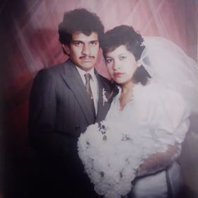

Menu

Mi Padre
Mi padre se llama Antonio Garcia Torales, nacio un 30 de Mayo de 1965 en el Distrito Federal, desde pequeño mi padre tuvo muy buenos valores que me los inculco a mi, es un ejemplo a seguir para mi, porque a pesar de todo lo que ha pasado y muchas cosas que suceden diariamente, el lucha por sacarnos adelante, es responsable y sobre todo trabajador pero aun mucho mas importante el es mi padre y lo amo.
Mi Madre
Mi madre se llama Ana Maria Garcia Rivera, ella nacio un 9 de abril de 1968 en el distrito federal, ella es igual mi ejemplo a seguir porque sin ella no se que seria yo literalmente, mi madre es doctora, contadora, estilista, en fin no me alcanzaria una sola pagina para darle las gracias a mi madre, pero mas sin embargo es la mejor madre que pude tener y espero poder pagarle todo lo que ha hecho por mi, la amo con todo mi corazon.